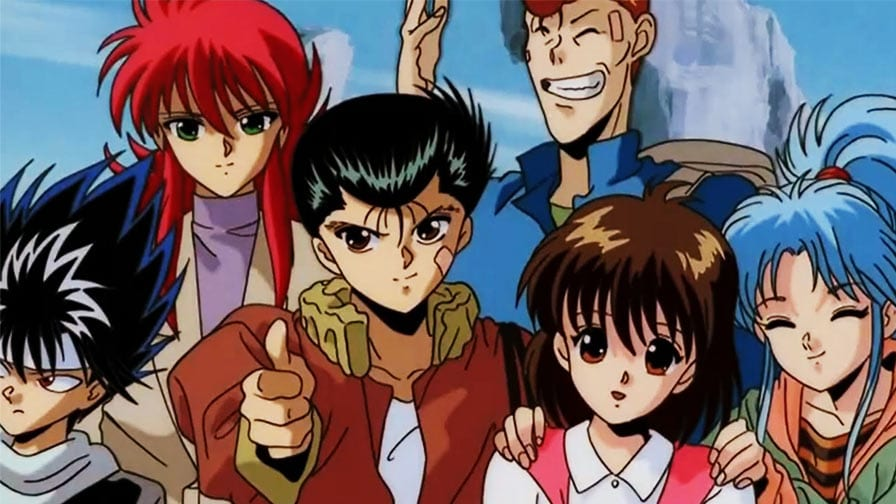

Yu Yu Hakusho segue a história de Yusuke Urameshi, um delinquente que, num ato incaracterístico de altruísmo, é atropelado por um carro e morto em uma tentativa de salvar um garotinho, empurrando-o para fora do caminho. Seu fantasma é recebido por Botan, que se apresenta como a navegante do rio Sanzu, que transporta as almas para o submundo ou Mundo Espiritual, onde elas podem ser julgadas pela vida após a morte. Botan informa Yusuke que seu ato pegou até mesmo o submundo de surpresa e que ainda não havia um lugar feito para ele seja no céu ou inferno. Assim, Koenma, filho do governante do submundo Enma, oferece a Yusuke uma chance de retornar ao seu corpo através de uma série de testes.
O anime estreiou no Brasil em 1997, na Rede Manchete
Sagas dos anime:
- Saga do Detetive Espiritual
- Saga dos Três Reinos
- Saga do Capítulo Negro
- Saga dos Três Reis